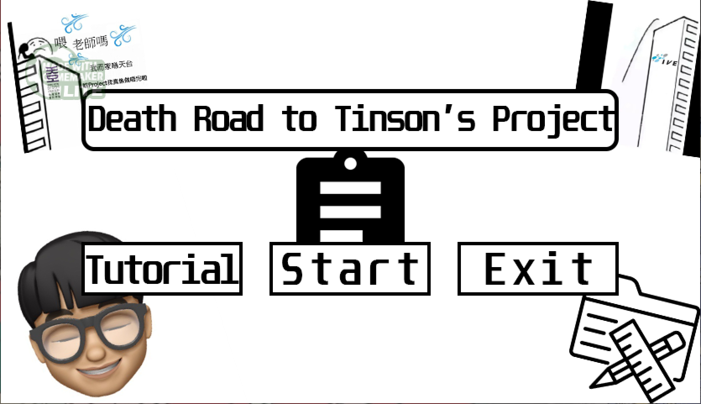

𝐆𝐚𝐦𝐞 𝐒𝐭𝐨𝐫𝐲 𝐛𝐚𝐜𝐤𝐠𝐫𝐨𝐮𝐧𝐝:
In the story, Pooh Pooh is a naive student, preparing to enter the college’s foundation diploma with anticipation.
Suddenly, he encountered the great demon “Tinson” in the ITE3714 course, and he was constantly under the pressure of assignment from Tinson in the last semester before he graduated.
Finally, can the protagonist survive this period of graduation?
𝐁𝐫𝐢𝐞𝐟 𝐨𝐟 𝐜𝐡𝐚𝐫𝐚𝐜𝐭𝐞𝐫𝐬 𝐚𝐧𝐝 𝐠𝐚𝐦𝐞 𝐩𝐥𝐚𝐲:
The game is divided into four levels in total, each level will continue to increase the difficulty, such as increasing the number of Tinson and the target score that the mission needs to achieve;
The player is acting as a student, who needs to constantly improve his score by eating balls to complete the task.